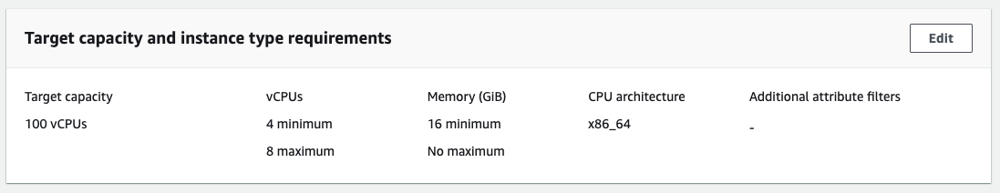

Khi số lượng Spot biến động, bạn không thể chắc chắn rằng mình sẽ luôn nhận được số lượng mình cần. Tính năng chấm điểm vị trí Spot có thể đề xuất (các) Region AWS hoặc (các) Availability Zone nơi bạn có thể chạy khối lượng công việc dựa trên yêu cầu về số lượng Spot của mình. Điểm vị trí Spot cho (các) Region hoặc (các) Availability Zone điểm từ 1 đến 10 cho biết khả năng thành công của yêu cầu Spot. Điểm 10 cho biết rằng yêu cầu Spot của bạn có nhiều khả năng—nhưng không đảm bảo—thành công và điểm 1 cho biết rằng yêu cầu Spot của bạn hoàn toàn không có khả năng thành công. Để SPS trả về điểm có ý nghĩa, yêu cầu SPS phải được đặt cấu hình với ít nhất ba loại phiên bản.
Bạn có thể tính điểm vị trí Spot bằng cách sử dụng Amazon EC2 Console hoặc AWS CLI.
Cùng một yêu cầu điểm vị trí Spot có thể mang lại các điểm khác nhau cho cùng một Region hoặc Availability Zone khi được tính vào các thời điểm khác nhau. Điểm vị trí Spot giống nhau có thể được trả về cho các Region hoặc Availability Zone khác nhau.
Điểm vị trí Spot có thể được sử dụng để
Cung cấp các đầu vào như hiển thị bên dưới:

Đầu ra mẫu của phản hồi trên bảng điều khiển được hiển thị bên dưới:
Bạn có thể sử dụng tệp json bao gồm các tham số để chạy yêu cầu điểm vị trí Spot.
Để bắt đầu, hãy chỉ định dung lượng Spot mục tiêu, dưới dạng vCPU hoặc bộ nhớ tính bằng MiB hoặc theo đơn vị. Bằng cách chỉ định dung lượng mục tiêu của bạn theo số lượng vCPU hoặc dung lượng bộ nhớ, bạn có thể sử dụng các đơn vị này khi tính tổng dung lượng. Ví dụ: khi trộn các instances có kích thước khác nhau, bạn có thể chỉ định số lượng mục tiêu theo tổng bộ nhớ. Các phiên bản có kích thước khác nhau được xem xét dựa trên bộ nhớ của nó thay vì tổng số phiên bản khi tính tổng số lượng mục tiêu.
Chỉ định các thuộc tính hoặc loại Instance. Nếu có thể chọn instance dựa trên thuộc tính, bạn có thể sử dụng lựa chọn loại instance dựa trên thuộc tính để chỉ định nhu cầu điện toán của mình. Nếu bạn cần sử dụng các loại instance cụ thể cho khối lượng công việc của mình, hãy chỉ định các loại phiên bản này. Trong cả hai trường hợp, hãy đảm bảo rằng yêu cầu về dung lượng Spot của bạn bao gồm ít nhất ba loại Instance trong yêu cầu.
cat <<EoF > ./sps-input.json
{
"InstanceRequirementsWithMetadata": {
"ArchitectureTypes": [
"x86_64"
],
"InstanceRequirements": {
"VCpuCount": {
"Min": 4,
"Max": 8
},
"MemoryMiB": {
"Min": 16384
}
}
},
"TargetCapacity": 100,
"TargetCapacityUnitType": "vcpu",
"SingleAvailabilityZone": false
}
EoF
Trong ví dụ trên, chúng tôi sẽ chạy điểm vị trí Spot cho 10K vCPU sử dụng bất kỳ phiên bản kiến trúc x86 nào có vCPU từ 4 đến 8 và Bộ nhớ lớn hơn 16 MB. Để chạy yêu cầu điểm vị trí Spot với các thông số trên, hãy sử dụng lệnh này.
aws ec2 get-spot-placement-scores --cli-input-json file://./sps-input.json
Điểm vị trí Spot trả về 10 khu vực hoặc 10 Availability Zones hàng đầu nơi yêu cầu Spot cụ thể có nhiều khả năng thành công nhất. Bạn có thể thu hẹp các Region sẽ được xem xét trong phản hồi. Bạn có thể kết hợp bộ lọc Khu vực và yêu cầu Availability Zones được tính điểm để trả về danh sách được tính điểm của tất cả các Availability Zones.